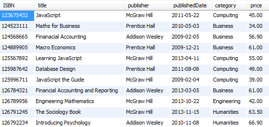

Objectives
In this lab we will learn more about the SELECT statement.
- Limit the columns returned by a Select statement
- Limit the Rows returned by a Select statement using the following operators:
- LIKE
- BETWEEN ... AND
- IN
- AND/OR
- IS NULL
- Sort the Rows returned by a Select statement using Order By
Pattern Matching
Sometimes we do not always have the exact search criteria we need.
Maybe we need to find some books with JavaScript in the title. If we enter:
SELECT title FROM book WHERE title = 'JavaScript';This will only return books with the title equal to JavaScript, so titles like JavaScript-The Guide or Learning JavaScript would not be returned.
So we need to broaden our search criteria so that it includes the term JavaScript and is preceded by and/or followed by other term(s).
To do this we use Pattern Matching with the LIKE clause. To denote several characters, use %:
SELECT title FROM book WHERE title LIKE '%JavaScript%';This statement returns book titles, that includes JavaScript in the title.
The LIKE operator allows us to pattern match. The % is a wildcard which stands for zero or more letters or numbers.
What will each of the following return?
SELECT title FROM book WHERE title LIKE 'JavaScript%';
SELECT title FROM book WHERE title LIKE '%JavaScript';The underscore is also a wildcard but it stands in for just one letter or number, try out the following:
SELECT * FROM student WHERE county LIKE '_aterford';Exercises
Retrieve the title and publisher of all Books whose title starts with the word Database.

Retrieve the title and publisher of all Books whose title includes the word Engineering.

Retrieve the names (first and last) of all Students whose last name start with D.

BETWEEN ... AND
We can use the BETWEEN ... AND operators to search within an inclusive range of values, for example:
For Example, to return students from years 1, 2, and 3:
SELECT * FROM student WHERE year BETWEEN 1 AND 3;To return students (by name) with course codes between wd150 and wd159:
select concat(fName, ' ', lName) as Name, course from student where course between 'wd150' and 'wd159';NOT BETWEEN ... AND
To return students (by name) with course codes outside the range of the previous example:
select concat(fName, ' ', lName) as Name, course from student where course not between 'wd150' and 'wd159';Exercise
- Retrieve all book details that were published from 2008-01-01 to 2013-12-31 inclusive. 
IN
The IN operator allows us to query records based on matching one of a number of values. We can use the NOT operator to negate those results. So if we are only interested in Computing, Business, and Engineering books, instead of writing the query as follows:
SELECT * FROM book WHERE category = 'Computing' OR category = 'Business' OR category ='Engineering';We can write it as follows:
SELECT * FROM book WHERE category IN ('Computing', 'Business', 'Engineering');NOT IN
To select from outside the above range, use:
SELECT * FROM book WHERE category NOT IN ('Computing', 'Business', 'Engineering');Exercise
- Retrieve the names, towns, and county of all Students from Kilkenny, Waterford or Wexford. Again, output the student name concatenated and labelled as Name.

AND/OR
When one search criteria is not enough we use the AND, OR operators to use more than one search condition.
The following commands give very different results - can you work out why?
SELECT * FROM book WHERE category = 'Computing' AND publisher = 'Sitepoint';
SELECT * FROM book WHERE category = 'Computing' OR publisher = 'Sitepoint';
SELECT * FROM book WHERE category = 'Computing' OR category = 'Business';Exercises
Retrieve the names of all Students in first year from Waterford. Output the student name concatenated and labelled as Name.

Retrieve the title and price of all books that contain the Database keyword and are priced at 50 euro or less.

NULL
A NULL value (not white space or a zero) exists in a database where a piece of data is missing or not filled in.
For example when entering information into a table not all the information may be to hand at the time of data entry and so may be left NULL. Sometimes we may want to find out where these NULL values are. Again we can use IS NOT NULL for negation.
Return the ISBN from the bookcopy table for all books whose datedestroyed is unknown or unavailable:
SELECT ISBN FROM bookcopy WHERE datedestroyed IS NULL;Return the ISBN from the bookcopy table for all books whose datedestroyed is known:
SELECT ISBN FROM bookcopy WHERE datedestroyed IS NOT NULL;ORDER BY
To sort your query results you should use the ORDER BY clause. This clause always comes last in your SELECT statement. Ascending order is the default.
Return the title and category of all books from the book table whose category is Computing or Business or Engineering sorted in alphabetical order by category.
SELECT title, category FROM book WHERE category IN ('Computing', 'Business', 'Engineering') ORDER BY category;To reverse the order you must specify descending order using the keyword DESC.
SELECT title, category FROM book WHERE category IN ('Computing', 'Business', 'Engineering') ORDER BY category DESC;You can also sort by more than one column, where the first column is the outer sorted value.
Return all the student records sorted in alphabetic order by lastname (lname) and within each lastname by firstname (fname).:
SELECT * FROM student ORDER BY lname, fname;For Example, Alice Ryan would appear before Anne Ryan.
Exercises:
Retrieve the names of students whose last name is Ryan sorted by first name. Again, output the student name concatenated and labelled as Name.
Retrieve the names, towns, and county of all Students from Kilkenny, Waterford or Wexford. Again, output the student name concatenated and labelled as Name. Sort the returned records by county and within each county by town.

Retrieve the price and title of all business books. Output the results in reverse order of price and in ascending order of title.